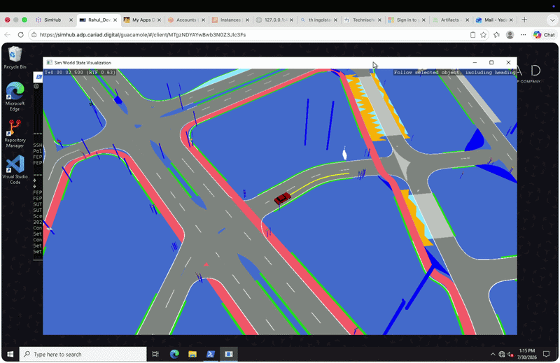
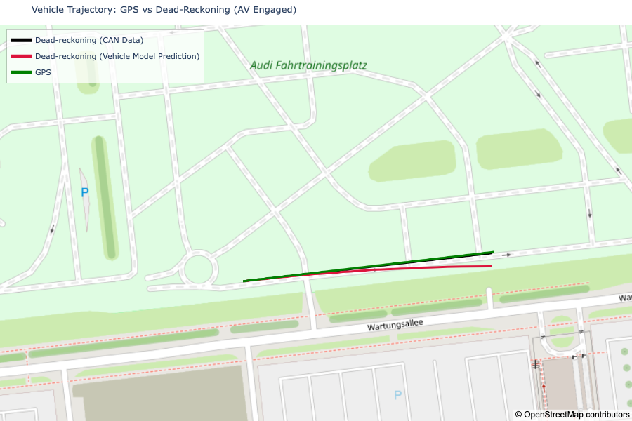

MASTER THESIS · VOLKSWAGEN ADMT / MOIA GMBH
Development of a Data-Driven Vehicle Dynamics Model for XiL Testing Environments
Developed an LSTM-based vehicle model that estimates dynamics states from CAN signals, then wrapped it for autoregressive prediction from control inputs.
Physics-based loss constraints preserve realistic motion behavior. The model achieved R² > 0.90 for all signals in open-loop evaluation and was integrated with Volkswagen’s in-house simulator for closed-loop scenarios with the self-driving stack in the loop.

CLOSED-LOOP SIMULATIONSDS IN THE LOOP

OPEN-LOOP EVALUATIONR² > 0.90